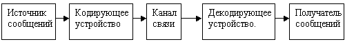
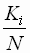
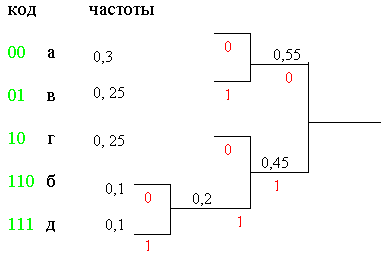
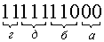

8. Сжатие данных
8.1 Алгоритмы обратимых методов. Алгоритм RLE (Run–Length Encoding)Рассмотрим общую схему передачи информации:

Если речь идёт о хранении данных, то в этой схеме между каналом связи и декодирующим устройством появляется ещё два этапа:

Как хранение, так и передача информации обходятся участникам информационного процесса недёшево. В связи с этим регулярно возникает необходимость сжимать данные перед тем, как размещать их в архивах или передавать по каналам связи.
Характерной особенностью большинства “классических” типов данных, с которыми традиционно работают люди, является определённая избыточность. Степень избыточности зависит от типа данных: например, у видео данных степень избыточности обычно выше в несколько раз, чем у графических данных, а степень избыточности графических данных в несколько раз выше, чем у текстовых. Кроме того, степень избыточности зависти от принятой системы кодирования. Для человека избыточность информации часто связана с представлением о её качестве. А вообще-то для неё есть и математическое определение.
Несмотря на изобилие алгоритмов сжатия данных, теоретически есть только три способа уменьшения их избыточности: либо изменение содержания данных, либо изменение их структуры, либо и то, и другое вместе.
Если при сжатии данных происходит изменение их содержания, метод сжатия необратим и при восстановлении данных не происходит полного восстановления исходной последовательности. Такие методы называют также методами сжатия с регулируемой потерей информации. Естественно, они применимы не ко всем типам данных: их нельзя применять к текстовым документам, базам данных, и, тем более, к программному коду. Такие методы применяют к мультимедийным данным: видеоряду, музыкальным записям, звукозаписям и рисункам. Характерными форматами сжатия с потерей информации являются:
.JPG – для графических данных;
.MPG – для видео данных;
.MP3 – для звуковых данных;
Методы сжатия с регулируемой потерей информации дают очень хороший эффект сжатия.
Если при сжатии данных происходит только изменение их структуры, то метод сжатия обратим. Обратимые методы применяются к любым типам данных. Характерными форматами сжатия без потери информации являются:
.GIF, .TIFF, .PCX и многие другие – для графических данных.
.AVI – для видеоданных.
.ZIP, .ARJ, .RAR, .LZH, .LH, .CAB и многие другие – для любых типов данных.
При обсуждении эффективности методов сжатия следует иметь в виду существование следующих доказанных теорем:
1. Для любой последовательности данных существует теоретический предел сжатия, который не может быть превышен без потери части информации.
2. Для любого алгоритма сжатия можно указать такую последовательность данных, для которой он обеспечит лучшую степень сжатия, чем другие методы.
3. Для любого алгоритма сжатия данных можно указать такую последовательность данных, для которой данный алгоритм вообще не позволит получить сжатия.
Из 2 и 3 следует, что оценивать эффективность алгоритмов сжатия достаточно сложно. Наивысшую эффективность они демонстрируют для данных разных типов и разных объёмов. Существует много обратимых методов сжатия данных, но в их основе лежит небольшое количество теоретических алгоритмов. Коротко рассмотрим три из них: RLE, KWE и алгоритм Хаффмана.
8.1 Алгоритмы обратимых методов.
В основу подобных алгоритмов положен принцип выявления повторяющихся последовательностей данных и замены их простой структурой, в которой указывается код данных и коэффициент повтора.
Пример 1. Исходная последовательность: 0;0;0;127;127;0;255;255;255;255. Исходная последовательность занимает 10 байт памяти.
Для неё строится следующая структура:
| Значение |
Коэффициент
повтора |
| 0 |
3 |
| 127 |
2 |
| 0 |
1 |
| 255 |
4 |
После кодирования исходная последовательность будет иметь вид: 0;3;127;2;0;1;255;4.
Т.е сначала идёт значение, за ним – сколько раз это значение требуется повторить. После кодирования памяти требуется 8 байт.
Наилучшие объекты для такого алгоритма – графические файлы, в которых есть большие одноцветные участки. Для текстовых данных методы RLE, как правило, не эффективны.
Алгоритм кодирования по ключевым словам. В его основу положено кодирование лексических единиц группами байтов фиксированной длины. Чаще всего лексической единицей является слово. Результат кодирования сводится в таблицу, которая прикладывается к результирующему коду, и представляет собой словарь. Обычно для англоязычных текстов принято использовать двухбайтную кодировку (пара байтов в этих алгоритмах называется “токен”).
Эффективность данного метода зависит от длины документа, поскольку из-за необходимости прикладывать к архиву словарь, длина кратких документов не только не уменьшается, а даже возрастает.
Этот алгоритм наиболее эффективен для англоязычных текстов и файлов баз данных. Для русскоязычных документов, отличающихся большой длиной слов, большим количеством суффиксов, приставок и окончаний, не всегда возможно ограничиться двухбайтными токенами, и эффективность метода заметно снижается.
В основе этого алгоритма лежит кодирование не байтами, а битовыми группами. Дело в том, что в реальных алфавитах какие-то символы встречаются чаще, какие-то реже. Идея алгоритма проста: надо часто встречающиеся символы кодировать более короткими словами, а реже встречающиеся – длинными словами.
Перед началом кодирования проводится частотный анализ текста и определяется частота повтора всех встречающихся символов.
Пример 2. Пусть в алфавите всего 5 символов: А0= {а, б, в, г, д}. После анализа выяснилось, что частота появления этих символов соответственно К1=30, К2=10, К3=25, К4=25, К5=10, а сам текст состоит из 100 символов. Вычислим относительные частоты: , где N – общее количество символов.
Для нашего примера они соответственно 0,3; 0,1; 0,25; 0,25; 0,1.
Теперь исходный алфавит надо упорядочить по убыванию относительных частот: А1={а, в, г, б, д }. (см. рисунок 4):
Сначала объединим вместе два самых редких символа – «б» и «д» (рис. 4). Верхнему припишем 0, нижнему – 1. У нас появился новый алфавит, в котором символы «б» и «д» считаются одним символом (обозначим его «б1») с относительной частотой 0,1+0,1=0,2.
Теперь объединим вместе два более редких символа нового алфавита, «б1» и, к примеру, «г». Верхнему приписываем 0, нижнему 1. Теперь они считаются одним символом с относительной частотой 0,2+0,25=0,45. Опять находим два символа с наименьшими частотами и объединяем их в один. Теперь это символы «а» и «в». Верхнему приписываем 0, нижнему 1. Их суммарная относительная частота 0,3+0,25=0,55. Осталось объединить последние два символа, верхнему приписываем 0, нижнему 1.

Код символа получается из последовательности нулей и единиц при движении по этому дереву справа налево к каждому символу. На рисунке получившиеся коды символов выделены зелёным цветом.
Попробуем декодировать последовательность 1111111000:
.
Т.е. при декодировании получим “гдба”.
Код Хаффмана однозначно декодируем. Он относится к префиксным кодам. (Определение префиксного кода – в нём ни одно кодовое слово не является началом другого кодового слова).
Вообще говоря, образующаяся иерархическая структура должна прикладываться к закодированному тексту. Следовательно, для небольших текстов в таком кодировании выгоды нет никакой. Этот алгоритм даёт эффект при больших объёмах информации.
Код Хаффмана оптимален в том смысле, что у него наименьшая средняя длина кодового слова.
Был разработан Шенноном и Фано независимо друг от друга в 1948-49 г. Близок по построению к коду Хаффмана.
Алгоритм (возможны варианты):
- Документ просматривается для определения частот всех встречающихся символов.
- Выписывают символы в порядке возрастания относительных частот.
- Множество символов последовательно делят на два подмножества так, чтобы сумма относительных частот одного подмножества была приблизительно равна сумме относительных частот второго. Для левого подмножества каждому символу приписывают «0», для правого – «1». Дальнейшие разбиения повторяются до тех пор, пока все подмножества не будут состоять из одного элемента.
Пример 3. Проведём кодирование текста из примера 2 методом Фано (см. рисунок 5)
Код символа получается движением от корня к листьям. В результате получим следующие коды символов:
а – 11;
в – 10;
г – 01;
б – 001;
д – 000;
Говорят, что алгоритм создания кода Хаффамана « снизу-вверх», а кода Фано «сверху-вниз». Достоинство этих кодов – простота реализации, недостаток – не оптимальность в общем случае. Эти алгоритмы часто используются в графических форматах, при этом кодируются не отдельные символы, а целые байты. К примеру, разновидность алгоритма Хаффмана используется в качестве последнего этапа архивации в JPEG, как составная часть архивации – в TIFF.
В реальной жизни эти алгоритмы в чистом виде не применяются. Используют различные их комбинации. Общий принцип – предварительный просмотр и анализ документа для индивидуальной настройки алгоритма.